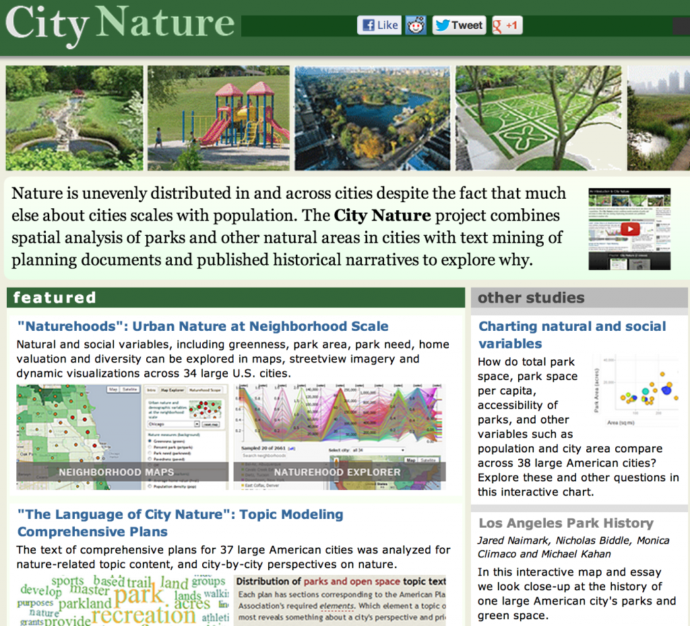

Today we’re releasing City Nature, the results of work exploring natural environments in urban areas using topic modeling, GIS, and data visualization. The site has rich interactivity, including an amazing parallel coordinates plot that allows you to explore the greenness and demography of 2600 US neighborhoods. I created a few of the dataviz elements and helped with the research, but the majority of the digital humanities development work was by Karl Grossner. PIs on the project are Jon Christensen and Michael Kahan here at Stanford (though Jon has since moved to UCLA) and included a summer research project involving a dozen undergraduates here at Stanford who had the chance to work with remote sensing, GIS, topic modeling, and information visualization.